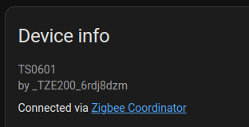
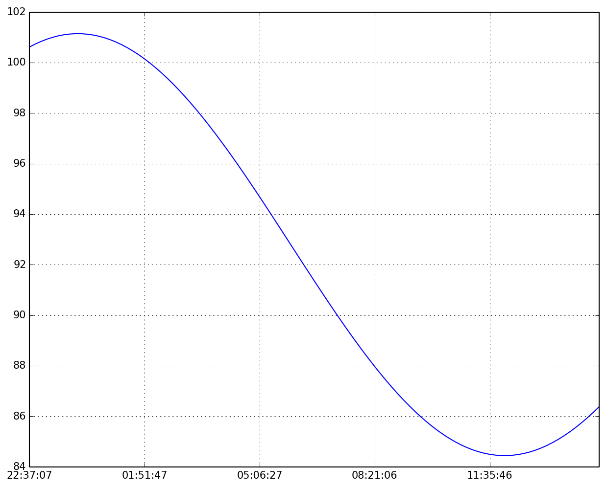

Home
Blog
Talks
Projects
Bibliography
Blog posts
Categories
All
(9)
academic
(2)
bibliography
(2)
conda
(2)
debugging
(1)
geospatial
(1)
hacking
(1)
homeassistant
(1)
mamba
(2)
matplotlib
(1)
open-source
(2)
planet four
(1)
plotting
(1)
python
(4)
quarto
(2)
rioxarray
(1)
software management
(2)
thermostats
(1)
tuya
(1)
xarray
(1)
Why rioxarray 0.21 Won’t Install with xarray 2026
Tracing a version pin from a slice indexing regression
python
geospatial
xarray
rioxarray
debugging
If you’ve recently tried to install
rioxarray
alongside a current
xarray
, you’ve likely hit something like this:
2026-03-02
Michael Aye
chronobib: Group Your Quarto Bibliography by Year
A companion to highlight-author for academic publication pages
quarto
academic
bibliography
open-source
After publishing highlight-author earlier today, I extracted the other half of my bibliography tooling into its own extension: chronobib.
2026-03-02
Michael Aye
highlight-author: A Quarto Extension to Highlight Your Name in Bibliographies
Because every CV, grant proposal, and publication page needs it
quarto
academic
bibliography
open-source
If you’ve ever built an academic homepage, a CV, or a grant proposal in Quarto, you’ve probably wanted one simple thing:
make your own name stand out
in the bibliography.
2026-03-02
Michael Aye

Integrate Zigbee Tuya Thermostats into Home Assistant
How to add unsupported ones to ZHA
homeassistant
tuya
thermostats
python
Let me start by saying that my only work in this knowledge gathering was the combination of several internet searches. The real genius lies in the group of people creating…
2023-03-06
Minimal Conda Setup Instructions
python
conda
mamba
software management
There’s an increasing amount of folks complaining that they need to watch a video for all their setting up tools etc.
2021-10-15
Michael Aye
Testing your internet speed regularly
Use crontab and a bit of Python to store speedtest results in a CSV.
hacking
python
This post is making use of the
speedtest
command line version of Ookla’s speedtest tools, which you can get here for various OSes: https://www.speedtest.net/apps/cli
2021-09-22
Michael Aye
Mamba is the new Conda
conda
mamba
software management
Mamba is a CLI tool to manage conda environments and a drop-in replacement for the
conda
CLI tool. It is built in C/C++ and hence resolves package dependencies much faster…
2021-09-10
Michael Aye

Fan Creation
planet four
I wrote this blog post 2 weeks ago, but I wanted to show the IPython notebook in its full glory, so I got delayed posting this until I finally had finished my Blogger blog…
2014-08-05
Michael Aye
Matplotlib Ticklabel Formats
plotting
matplotlib
If you are a heavy matplotlib user, you are bound to have seen the funny offset numbers in the top left of the plot window:
2013-09-03
No matching items